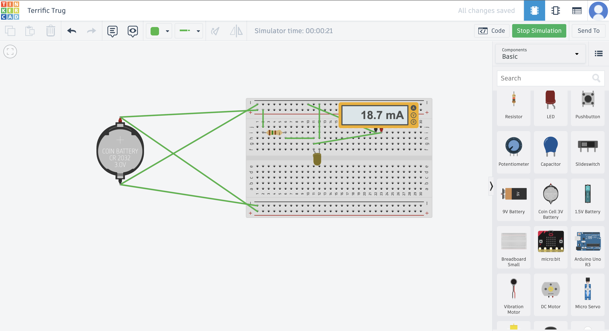
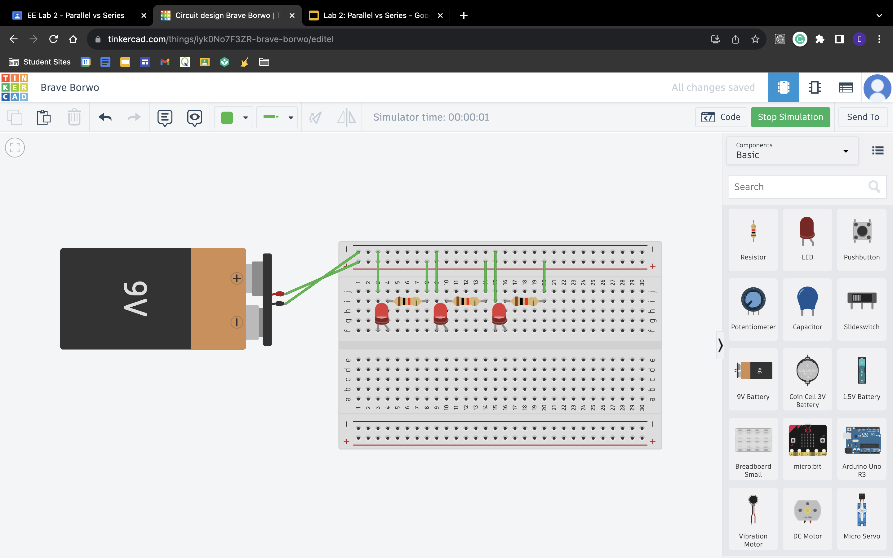
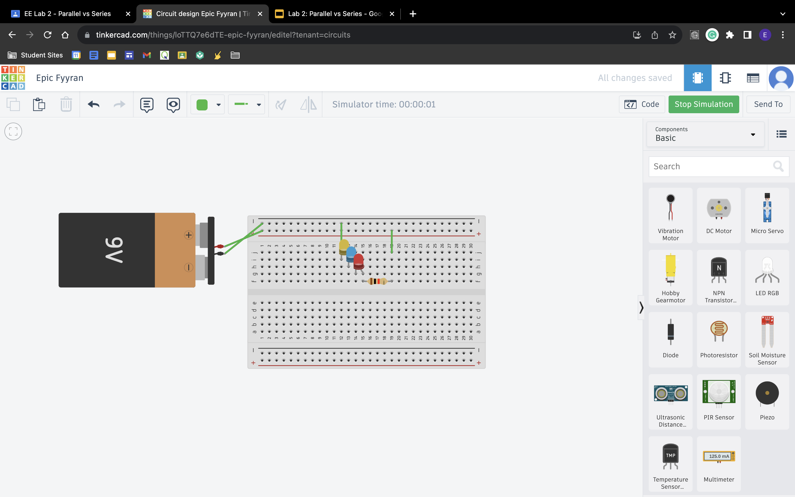

20/10/23 - This week, we learned more about aerospace engineering. I learned many things about what makes aircraft and spacecraft good at flying through observation and reading about it on various websites. We also built a bottle rocket out of a 2 liter soda bottle, cardboard, paper, duct tape, scotch tape, and hot glue. To fuel it, we put water in the rocket and pressurized it. The shape of the fins were what I focused the most on to make it fly. I tried to create the most aerodynamic shape while being able to generate lift at the same time. When we finally flew the rockets, our rocket flew pretty far. I don't think I had many expectations for it, but I'm glad it did well.
26/10/23 - This week, we learned about environmental engineering. We learned that environmental engineering is a type of engineering where engineers work to make the planet livable by studying and treating air pollution, wastewater, solid waste, and many others. To help us learn more about environmental engineering, we created water filters for our challenge this week. The water filter me and my partner made consisted of five layers. Starting from the bottom, a layer of cotton balls, medium-sized stones, sand, another layer of medium-sized stones, and a final top layer of large stones. We wanted to try and filter from smallest to largest particles,
with and extra layer of rock over the cotton to help weigh it down. I think our filter worked pretty well, but not well enough to make the black water into white water. This 3-day weekend, I'm excited to go to church, as the high school ministry is doing a lock in from Friday night to saturday morning. I'm not looking forwarrd to the amount of homework I have though.
9/11/23
This week I am doing a website update for both this week and last week. Last week we started learning about Electrical Engineering! I like this subject a little bit, but I didn't really care for it. It is not necessarily my favorite type of engineering, but it is pretty high up on the list. For Electrical Engineering, we learned about what it was, what subfields there were, what Ohm's Law is, what certain tools and components there were in circuits, and how the flow of electricity works. In the first week, we focused mainly on understanding the concepts through worksheets and stuff. We also learned about circuits and how to make them in TinkerCad. In the second week, we completed labs that
helped us learn how to make circuits and understand the flow of electricity better. It also made us understand the different components of a circuit better. We used batteries, breadboards, wires, resistors, LEDs, and a button in 4 different labs. We did the first lab in the first week, where we learned how to make a circuit using a breadboard in TinkerCad. We also did the second lab last week, where we learned about parallel vs series circuits and how to build them. This week, we did labs 3 and 4, where we used a physical breadboard to build various circuits and code the LEDs to blink in different patterns. In lab 3.1, we built a simple LED circuit. In lab 3.2, we built a circuit where we put LEDs
in a parallel circuit. In lab 3.3, we put them in series. For lab 3.4, we used resistors to make a voltage divider. Throughout all of the labs, we used a multimeter to measure voltage in different points of the circuit. For lab 4, we coded the LEDs with Arduino. For lab 4.1, we just made one LED blink continuously. For lab 4.2, we made 3 LEDs blink continously, all at the same rate. For labs 4.3 and 4.4, we got to make each of 3 LEDs blink at different times and at different intervals to create a christmas tree effect. For lab 4.5, we tried to make the LED fade slowly in and out, but because we ran out of time, we didn't succeed in this. I really like playing with the Arduino to make different
patterns. I want to try and use the Arduino with different components like a motor and see how to use the Arduino to program that.
Electrical Engineering Slides
Last Week's TinkerCad Photos
  
This Week's Lab 3
This Week's Lab 4
My group had 3 bridges in total. The first bridge was 33.2g, the second bridge was 42.2g, and the third bridge was 22.2g.
The weight held by bridge 1 was 268.6g, bridge 2 held 428.5g, and bridge 3 held up 634.7g.
The ratio of how much weight was held vs. how much weight it was for each bridge was as follows: bridge 1 - 8.09; bridge 2 - 10.15; bridge 3 - 28.59. The third bridge had one of the highest ratios of the class.
For all three bridges, there wasn't really a heaviest part of the bridge. We tried to make sure our bridge would be able to support weight by distributing it evenly, so we tried to make the bridge as even as possible.
The initial design we thought up for each bridge that we made was based on a warren truss type bridge. We figured out that we wanted this kind of bridge after looking at several types of bridges used in the real world, and seeing what worked best for our situation and the supplies we had. We couldn't make it exactly like a warren truss bridge due to us not having enough spaghetti noodles and also several accidents that lessened the number of spaghetti we had to spare. The final design of our bridge came after testing and iterating on our bridge with the knowledge we aquired with each version of the bridge we built.
Because of several restrictions and accidents within the building of the bridge, we could not make the design exactly how we wanted. However, what we managed to scrap together did pretty well, especially bridge 3. We had pretty impressive results, with a whopping ratio of weight held vs bridge weight of 28.59!
The point of failure for all of our bridges were the sides, where it was connected to the table. One of the bridges failed because a support noodle broke before the testing, and it broke at that point, which we expected. The other bridges also broke on the sides, and that was because we didn't put enough reinforcement there. We expected it to fail at that point as well.
We could improve our bridges mostly by having more noodles to work with. Besides that, I think we could have been more careful during the construction and make sure all parts of the bridge are reinforced equally. Something I think we could have done was have one continous noodle along the bottom and top edges, as I believe it would allow for better support.